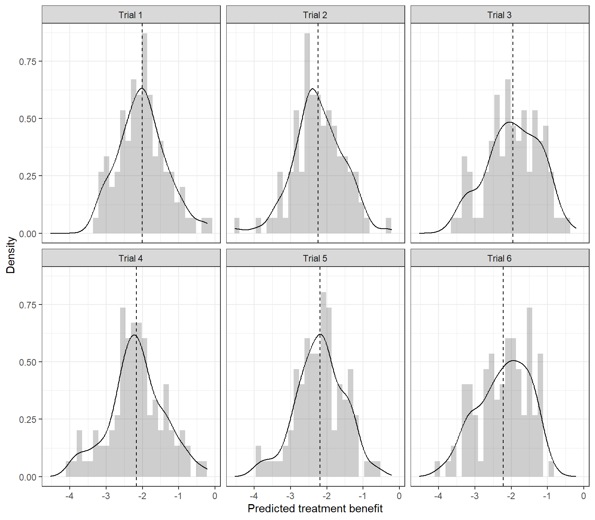

8 Prediction of individual treatment effect using data from multiple studies
![]()
In this chapter, we discuss statistical methods for developing models to predict patient-level treatment effects using data from multiple randomized and non-randomized studies. We will first present prediction models that assume a constant treatment effect and discuss how to address heterogeneity in baseline risk. Subsequently, we will discuss approaches that allow for treatment effect modification by adopting two different approaches in an IPD-MA context, namely the risk modelling and the effect modelling approach. For both approaches, we will first discuss how to combine IPD from RCTs comparing the same two treatments. We will then discuss how these methods can be extended to include randomized data from multiple treatments, real-world data, and published aggregate data. We will discuss statistical software to implement these approaches and provide example code as supporting information. Real examples will be used throughout to illustrate the main methods.
8.1 Estimating heterogeneous treatment effects in pairwise meta-analysis
We hereby provide code for estimating patient-level treatment effects for the case when we have patient-level data from multiple randomized trials.
8.1.1 Example of a continuous outcome
8.1.1.1 Setup
We start by simulating an artificial dataset using the R package bipd:
library(bipd)
ds <- generate_ipdma_example(type = "continuous")Let us have a look at the dataset:
head(ds) studyid treat z1 z2 y
1 1 0 -1.4080333 0.4976585 11
2 1 1 -0.2808028 0.7054476 10
3 1 1 0.1434411 -0.6242589 8
4 1 0 -0.5011206 1.0614987 11
5 1 1 -0.6102570 0.1756299 9
6 1 0 -0.7205885 1.9777567 11The simulated dataset contains information on the following variables:
- the treatment indicator
treat, which takes the values 0 for control and 1 for active treatment - two prognostic variables
z1andz2 - the continuous outcome
y - a trial indicator
studyid
| 0 (N=300) |
1 (N=300) |
Overall (N=600) |
|
|---|---|---|---|
| z1 | |||
| Mean (SD) | -0.0375 (0.952) | 0.0952 (0.986) | 0.0288 (0.971) |
| Median [Min, Max] | -0.0861 [-2.88, 2.88] | 0.0943 [-2.99, 3.25] | 0.00957 [-2.99, 3.25] |
| z2 | |||
| Mean (SD) | -0.0839 (1.01) | -0.122 (1.07) | -0.103 (1.04) |
| Median [Min, Max] | -0.0329 [-2.96, 2.81] | -0.145 [-3.11, 2.66] | -0.0843 [-3.11, 2.81] |
| studyid | |||
| 1 | 44 (14.7%) | 56 (18.7%) | 100 (16.7%) |
| 2 | 48 (16.0%) | 52 (17.3%) | 100 (16.7%) |
| 3 | 47 (15.7%) | 53 (17.7%) | 100 (16.7%) |
| 4 | 59 (19.7%) | 41 (13.7%) | 100 (16.7%) |
| 5 | 55 (18.3%) | 45 (15.0%) | 100 (16.7%) |
| 6 | 47 (15.7%) | 53 (17.7%) | 100 (16.7%) |
8.1.1.2 Model fitting
We synthesize the evidence using a Bayesian random effects meta-analysis model. The model is given in Equation 16.7 of the book. First we need set up the data and create the model:
ipd <- with(ds, ipdma.model.onestage(y = y, study = studyid, treat = treat,
X = cbind(z1, z2),
response = "normal",
shrinkage = "none"),
type="random")The JAGS model can be accessed as follows:
ipd$model.JAGSfunction ()
{
for (i in 1:Np) {
y[i] ~ dnorm(mu[i], sigma)
mu[i] <- alpha[studyid[i]] + inprod(beta[], X[i, ]) +
(1 - equals(treat[i], 1)) * inprod(gamma[], X[i,
]) + d[studyid[i], treat[i]]
}
sigma ~ dgamma(0.001, 0.001)
for (j in 1:Nstudies) {
d[j, 1] <- 0
d[j, 2] ~ dnorm(delta[2], tau)
}
sd ~ dnorm(0, 1)
T(0, )
tau <- pow(sd, -2)
delta[1] <- 0
delta[2] ~ dnorm(0, 0.001)
for (j in 1:Nstudies) {
alpha[j] ~ dnorm(0, 0.001)
}
for (k in 1:Ncovariate) {
beta[k] ~ dnorm(0, 0.001)
}
for (k in 1:Ncovariate) {
gamma[k] ~ dnorm(0, 0.001)
}
}
<environment: 0x0000022fbe8d6760>We can fit the treatment effect model as follows:
samples <- ipd.run(ipd, n.chains = 2, n.iter = 20,
pars.save = c("alpha", "beta", "delta", "sd", "gamma"))Compiling model graph
Resolving undeclared variables
Allocating nodes
Graph information:
Observed stochastic nodes: 600
Unobserved stochastic nodes: 19
Total graph size: 6034
Initializing modelHere are the estimated model parameters:
summary(samples)
Iterations = 2001:2020
Thinning interval = 1
Number of chains = 2
Sample size per chain = 20
1. Empirical mean and standard deviation for each variable,
plus standard error of the mean:
Mean SD Naive SE Time-series SE
alpha[1] 10.9224 0.04098 0.006479 0.009113
alpha[2] 8.0255 0.04179 0.006607 0.006480
alpha[3] 10.5387 0.05196 0.008216 0.011734
alpha[4] 9.6712 0.03866 0.006113 0.011441
alpha[5] 12.8963 0.04898 0.007744 0.009898
alpha[6] 15.7597 0.06275 0.009921 0.015179
beta[1] 0.2009 0.01911 0.003022 0.004567
beta[2] 0.3261 0.02122 0.003356 0.005746
delta[1] 0.0000 0.00000 0.000000 0.000000
delta[2] -2.7797 0.88557 0.140020 0.117590
gamma[1] -0.5375 0.02670 0.004221 0.009076
gamma[2] 0.6140 0.02409 0.003809 0.004835
sd 1.7917 0.38948 0.061582 0.081172
2. Quantiles for each variable:
2.5% 25% 50% 75% 97.5%
alpha[1] 10.8510 10.8987 10.9274 10.9525 10.9942
alpha[2] 7.9603 7.9938 8.0195 8.0531 8.1029
alpha[3] 10.4438 10.5105 10.5449 10.5766 10.6315
alpha[4] 9.6069 9.6431 9.6675 9.6957 9.7395
alpha[5] 12.8111 12.8646 12.8933 12.9260 13.0080
alpha[6] 15.6232 15.7180 15.7610 15.8010 15.8648
beta[1] 0.1632 0.1856 0.2051 0.2136 0.2336
beta[2] 0.2900 0.3083 0.3284 0.3421 0.3572
delta[1] 0.0000 0.0000 0.0000 0.0000 0.0000
delta[2] -3.9673 -3.3691 -2.9707 -2.2861 -1.0929
gamma[1] -0.5778 -0.5567 -0.5395 -0.5165 -0.4902
gamma[2] 0.5652 0.5958 0.6204 0.6287 0.6471
sd 1.1539 1.5357 1.7541 2.0721 2.60588.1.1.3 Prection
We can now predict the individualized treatment effect for a new patient with covariate values z1=1 and z2=0.5.
round(treatment.effect(ipd, samples, newpatient = c(z1 = 1, z2 = 0.5)), 2)0.025 0.5 0.975
-4.36 -2.88 -1.63 We can also predict treatment benefit for all patients in the sample, and look at the distribution of predicted benefit.
library(dplyr)
library(ggplot2)
ds <- ds %>% mutate(benefit = NA)
for (i in seq(nrow(ds))) {
newpat <- as.matrix(ds[i, c("z1", "z2")])
ds$benefit[i] <- treatment.effect(ipd, samples, newpatient = newpat)["0.5"]
}
ggplot(ds, aes(x = benefit)) + geom_histogram() + facet_wrap(~studyid) +
xlab("Predicted treatment benefit")
8.1.1.4 Penalization
Let us repeat the analysis, but this time while penalizing the treatment-covariate coefficients using a Bayesian LASSO prior.
ipd <- with(ds, ipdma.model.onestage(y = y, study = studyid,
treat = treat,
X = cbind(z1, z2),
response = "normal",
shrinkage = "laplace"),
type = "random")
samples <- ipd.run(ipd, n.chains = 2, n.iter = 20,
pars.save = c("alpha", "beta", "delta", "sd", "gamma"))Compiling model graph
Resolving undeclared variables
Allocating nodes
Graph information:
Observed stochastic nodes: 600
Unobserved stochastic nodes: 20
Total graph size: 6039
Initializing modelround(treatment.effect(ipd, samples, newpatient = c(1,0.5)), 2)0.025 0.5 0.975
-4.53 -2.92 -1.20 8.1.2 Example of a binary outcome
Version info
This chapter was developed using the following version of R and its packages:
R version 4.2.3 (2023-03-15 ucrt)
Platform: x86_64-w64-mingw32/x64 (64-bit)
Running under: Windows 10 x64 (build 19045)
Matrix products: default
locale:
[1] LC_COLLATE=Dutch_Netherlands.utf8 LC_CTYPE=Dutch_Netherlands.utf8
[3] LC_MONETARY=Dutch_Netherlands.utf8 LC_NUMERIC=C
[5] LC_TIME=Dutch_Netherlands.utf8
attached base packages:
[1] stats graphics grDevices utils datasets methods base
other attached packages:
[1] ggplot2_3.4.2 dplyr_1.1.1 table1_1.4.3 tableone_0.13.2
[5] bipd_0.3
loaded via a namespace (and not attached):
[1] pillar_1.9.0 compiler_4.2.3 tools_4.2.3 digest_0.6.31
[5] gtable_0.3.3 jsonlite_1.8.4 evaluate_0.21 lifecycle_1.0.3
[9] tibble_3.2.1 lattice_0.21-8 pkgconfig_2.0.3 rlang_1.1.0
[13] Matrix_1.5-4 cli_3.6.1 DBI_1.1.3 rstudioapi_0.14
[17] yaml_2.3.7 mvtnorm_1.1-3 xfun_0.39 fastmap_1.1.1
[21] coda_0.19-4 withr_2.5.0 knitr_1.42 generics_0.1.3
[25] vctrs_0.6.1 htmlwidgets_1.6.2 mitools_2.4 grid_4.2.3
[29] tidyselect_1.2.0 glue_1.6.2 R6_2.5.1 fansi_1.0.4
[33] survival_3.5-5 rmarkdown_2.21 Formula_1.2-5 magrittr_2.0.3
[37] scales_1.2.1 htmltools_0.5.5 splines_4.2.3 colorspace_2.1-0
[41] utf8_1.2.3 survey_4.2-1 munsell_0.5.0